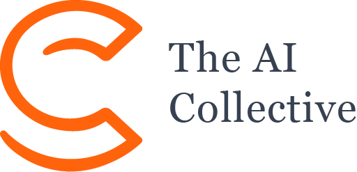

Ready-made model, or build your own with an AI agent
Ship an app people can use
One day, teams of two to five
A hospital struggles to plan its staff rotas fairly
A food bank works out who drives where
A volunteer group juggles too many people and too few time slots
The app: website, mobile app, agent workflow, chatbot. Any language works.
The planning model: ready-made, or your own.
Realistic data: made-up but believable, at real-problem size.
0hard/-12soft0hard means every one holds.0soft is better.POST /rotas
{
"volunteers": [
{ "name": "Amira", "skills": ["driving"], "maxHours": 6 },
{ "name": "Tom", "skills": ["packing"], "maxHours": 4 }
],
"shifts": [
{ "id": "sat-09", "start": "09:00", "end": "12:00", "skill": "driving" },
{ "id": "sat-13", "start": "13:00", "end": "16:00", "skill": "packing" }
]
}
200 OK
{
"assignments": [
{ "shift": "sat-09", "volunteer": "Amira" },
{ "shift": "sat-13", "volunteer": "Tom" }
],
"score": "0hard/0soft"
}Start with: A → Employee Shift Scheduling · B → employee scheduling quickstart
Start with: A → Field Service Routing · B → vehicle routing quickstart
Build your own.
More problem ideas on the website
Breaking the rules can mean disqualification. Teams get a chance to explain first.
Fit your data to a model Timefold runs in production. Spend the day on your app.
You need: a free trial account. No Java.
PRD Chat turns plain language into requirements. A quickstart gives you code to adapt.
You need: JDK 21+, Maven, Git, an AI agent, the hackathon license key.
Custom models can score highest on modeling the problem.
app.timefold.aiStuck? Point your agent at docs.timefold.ai/llms.txt
A ready-made model supports a fixed set of rules.
A rule you need isn't supported? Say so in your demo, or switch to option B.
# macOS
brew install --cask temurin@21
brew install maven
# Windows
winget install EclipseAdoptium.Temurin.21.JDK
winget install Apache.Maven
# Ubuntu / Debian
sudo apt install openjdk-21-jdk maven
# Any OS, with SDKMAN
sdk install java <21.x-tem identifier from: sdk list java>
sdk install maven
java -version # openjdk version "21.0.x" or higher
mvn -version # Apache Maven 3.9.x, running on Java 21+Copy the server URL from prd.timefold.ai
# Claude Code
claude mcp add --transport http timefold-prd <MCP_SERVER_URL>
# Codex: ~/.codex/config.toml
[mcp_servers.timefold-prd]
url = "<MCP_SERVER_URL>"Check: ask your agent "Which tools does the timefold-prd MCP server give you?"
Download the hackathon license: timefold-license.pem
# Easiest: put it in your home directory
mv ~/Downloads/timefold-license.pem ~/timefold-license.pem
# Or point an environment variable at it
export TIMEFOLD_LICENSE_PATH=/absolute/path/to/timefold-license.pem
export TIMEFOLD_LICENSE="$(cat ./path/to/timefold-license.pem)"Keep the name timefold-license.pem exactly, and don't commit it to your repository.
git clone https://github.com/TimefoldAI/timefold-quickstarts.git
cd timefold-quickstarts/java/employee-scheduling
mvn quarkus:dev # open http://localhost:8080Four weighted criteria, scored one to five
Each team ranks its top three. Not your own.
A well-configured ready-made model (A) can reach a three or four.
A five needs custom constraints for your community's specific rules (B), and a trade-off the model made that you can explain.
After the last demo, agree as a team on the three projects you'd most like to see used in your own community.
Ties: more judges points wins, then higher community impact.
€500 in Amazon vouchers
Winners may be featured in The AI Collective's global newsletter: 300,000+ subscribers
docs.timefold.ai/llms.txt